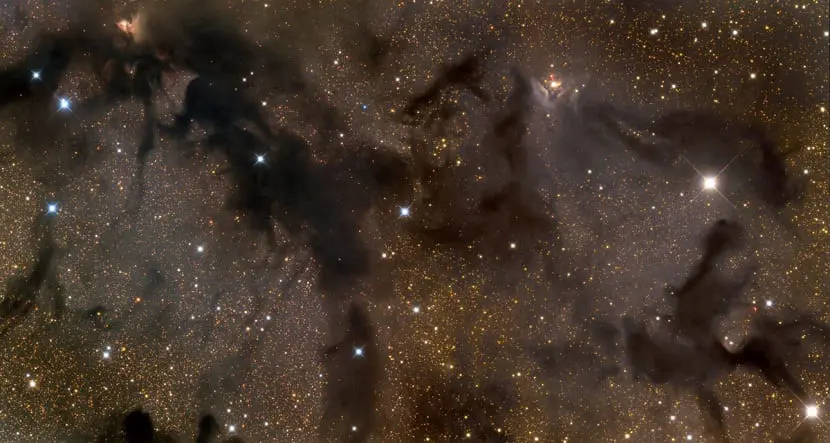

Índice
¿Que es una nebulosa?

Las nebulosas, como su propio nombre indica, son nubes gigantescas que toman formas extrañas en el espacio. Están constituidas por concentraciones de gases entre los que predominan el hidrógeno, helio y polvo estelar. Como sabéis, a lo largo y ancho del Universo no sólo existe una galaxia como se pensaba hace décadas, sino que hay millones. Nuestra galaxia es la Vía Láctea y está situada al lado de nuestra vecina, Andrómeda. Las nebulosas se pueden encontrar en las galaxias que son irregulares y en otras de forma aspiralada. Son bastante importante en el Universo, ya que en su interior nacen las estrellas a partir de una condensación y agregación de la materia. A pesar de que, a simple vista, son solo nubes de gas y polvo, no todas las nebulosas son iguales. A continuación vamos a analizar cada tipo de nebulosa para conocerlas en detalle.
Tipos de Nebulosa
Nebulosas oscuras
Una nebulosa oscura no es más que una nube de polvo y gas frío que no emite ningún tipo de luz visible. Las estrellas que contienen son ocultas, puesto que no emiten ningún tipo de radiación. Sin embargo, el polvo del que está formado estas nubes tiene un diámetro de tan sólo una micra. La densidad de estas nubes es como si fuera el del humo de un cigarrillo. Estos pequeños granos de material se unen para forman un número de moléculas como si se tratara de carbón, silicato o una capa de hielo.
Nebulosas difusas de reflexión

Este tipo está compuesta de hidrógeno y polvo. Recordamos que el hidrógeno es el elemento más abundante en todo el Universo. Las nebulosas de reflexión tienen la capacidad de reflejar la luz visible de las estrellas. El polvo tiene la distinción de que es de color azul. Las nebulosas alrededor de las Pléyades son excelentes ejemplos de este tipo.
Nebulosa de emisión

Este es el tipo más común de nebulosas, son visibles y emiten luz debido a la energía que reciben de las estrellas cercanas. Para emitir la luz los átomos de hidrógeno se excitan por la poderosa luz ultravioleta de las estrellas cercanas y se ioniza. Esto es, que pierde su único electrón para emitir un fotón. Es esta acción lo que genera el brillo en la nebulosa. Las estrellas de tipo espectral O puede ionizar el gas que hay dentro de un radio de 350 años luz. Por ejemplo, la Nebulosa del Cisne o M17 es una nebulosa de emisión descubierto por Chéseaux en 1746 y redescubierta por Messier en 1764. Esta nebulosa es muy brillante y de color rosa. Visible a simple vista en latitudes bajas. Cuando se tornan del color rojo significa que gran parte del hidrógeno está ionizado. Es el hogar de numerosas estrellas jóvenes nacidas a partir de la irradiación del gas por la nebulosa. Si se observa en infrarrojos se puede observar la cantidad de polvo en favor de la formación de las estrellas. Si entráramos dentro de la nebulosa podríamos ver un cúmulo abierto y compuesto de unas 30 estrellas oscurecidas por los gases. El diámetro suele ser de alrededor de 40 años luz. La masa total que se forma en las nebulosas de este tipo es de aproximadamente 800 más que la masa del Sol. Claros ejemplos de esta nebulosa es la M17, que se encuentra 5500 años luz de nuestro sistema solar. M16 y M17 se encuentran en el mismo brazo espiral de la Vía Láctea (el brazo de Sagitario o Sagitario-Carina) y tal vez parte del mismo complejo de gigantescas nubes de materia interestelar.
Nebulosa planetaria

Este es otro tipo de nebulosa. Las difusas están asociadas con el nacimiento de estrellas. En este caso nos referimos los restos de las estrellas. Nebulosa planetaria viene de las primeras observaciones que se tenían de estos objetos de aspecto circular. Cuando la vida de una estrella llega al final, brilla sobre todo en la región ultravioleta del espectro electromagnético. Esta radiación ultravioleta ilumina el gas que se expulsa por la radiación ionizante y por tanto se forma la nebulosa planetaria. Los colores que se pueden observar a partir de los diversos elementos se encuentran en una longitud de onda muy específica. Y es que los átomos de hidrógeno emiten una luz roja, mientras que los de oxígeno se iluminan en verde. La Nebulosa de la Hélice es una estrella cósmica a menudo fotografiado por astrónomos aficionados por sus colores vivos y su parecido con un ojo gigante. Se descubrió en el siglo 18 y se encuentra a unos 650 años luz de distancia en la constelación de Acuario. Se puede decir que las nebulosas planetarias son remanentes de las estrellas que, en el pasado, fueron similares a nuestro Sol. Cuando estas estrellas mueren, expulsan al espacio todas las capas gaseosas. Estas capas se calientan por el núcleo caliente de la estrella muerta. A esto se denomina enana blanca. El brillo que se produce se pueden ver tanto en longitudes de onda del visible e infrarroja.
Nebulosas de reflexión y emisión
No podemos acabar este post sin mencionar que existen nebulosas que mantienen las dos características mencionadas en los tipos anteriores. La mayoría de nebulosas de emisión suelen tener un 90% de hidrógeno, siendo el resto helio, oxígeno, nitrógeno y otros elementos. Por otro lado, las nebulosas de reflexión suelen ser azules porque ese es el color que se dispersa con más facilidad.